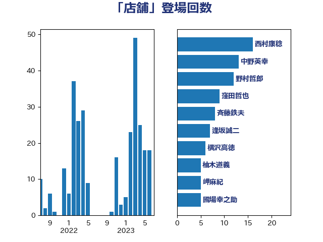

単語「店舗」

| 西村康稔 | 自由民主党 | 16 回 |
| 中野英幸 | 自由民主党 | 13 回 |
| 野村哲郎 | 自由民主党 | 12 回 |
| 窪田哲也 | 公明党 | 9 回 |
| 斉藤鉄夫 | 公明党 | 8 回 |
| 逢坂誠二 | 立憲民主党 | 7 回 |
| 横沢高徳 | 立憲民主党 | 6 回 |
| 柚木道義 | 立憲民主党 | 5 回 |
| 岬麻紀 | 日本維新の会 | 5 回 |
| 國場幸之助 | 自由民主党 | 5 回 |
| 音喜多駿 | 日本維新の会 | 4 回 |
| 田村まみ | 国民民主党 | 4 回 |
| 浜田聡 | NHK党 | 4 回 |
| 後藤茂之 | 自由民主党 | 4 回 |
| 城井崇 | 立憲民主党 | 4 回 |
| 伊藤岳 | 日本共産党 | 4 回 |
| 田村智子 | 日本共産党 | 3 回 |
| 清水貴之 | 日本維新の会 | 3 回 |
| 泉健太 | 立憲民主党 | 3 回 |
| 河野太郎 | 自由民主党 | 3 回 |
| 天畠大輔 | れいわ新選組 | 3 回 |
| ながえ孝子 | 無所属 | 3 回 |
| 高橋千鶴子 | 日本共産党 | 2 回 |
| 遠藤良太 | 日本維新の会 | 2 回 |
| 輿水恵一 | 公明党 | 2 回 |
| 石井章 | 日本維新の会 | 2 回 |
| 猪瀬直樹 | 日本維新の会 | 2 回 |
| 沢田良 | 日本維新の会 | 2 回 |
| 松村祥史 | 自由民主党 | 2 回 |
| 東徹 | 日本維新の会 | 2 回 |
| 岩谷良平 | 日本維新の会 | 2 回 |
| 岡田直樹 | 自由民主党 | 2 回 |
| 堀場幸子 | 日本維新の会 | 2 回 |
| 加藤勝信 | 自由民主党 | 2 回 |
| 住吉寛紀 | 日本維新の会 | 2 回 |
| 中川宏昌 | 公明党 | 2 回 |
| 高木陽介 | 公明党 | 1 回 |
| 高木宏壽 | 自由民主党 | 1 回 |
| 高木かおり | 日本維新の会 | 1 回 |
| 馬場雄基 | 立憲民主党 | 1 回 |
| 青山大人 | 立憲民主党 | 1 回 |
| 階猛 | 立憲民主党 | 1 回 |
| 長浜博行 | 無所属 | 1 回 |
| 長友慎治 | 国民民主党 | 1 回 |
| 鈴木俊一 | 自由民主党 | 1 回 |
| 金村龍那 | 日本維新の会 | 1 回 |
| 近藤和也 | 立憲民主党 | 1 回 |
| 蓮舫 | 立憲民主党 | 1 回 |
| 落合貴之 | 立憲民主党 | 1 回 |
| 萩生田光一 | 自由民主党 | 1 回 |
| 羽田次郎 | 立憲民主党 | 1 回 |
| 竹谷とし子 | 公明党 | 1 回 |
| 稲田朋美 | 自由民主党 | 1 回 |
| 秋野公造 | 公明党 | 1 回 |
| 田中英之 | 自由民主党 | 1 回 |
| 田中健 | 国民民主党 | 1 回 |
| 甘利明 | 自由民主党 | 1 回 |
| 渡辺孝一 | 自由民主党 | 1 回 |
| 浜地雅一 | 公明党 | 1 回 |
| 浜口誠 | 国民民主党 | 1 回 |
| 浅川義治 | 日本維新の会 | 1 回 |
| 櫻井周 | 立憲民主党 | 1 回 |
| 森田俊和 | 立憲民主党 | 1 回 |
| 森屋宏 | 自由民主党 | 1 回 |
| 柴愼一 | 立憲民主党 | 1 回 |
| 柳本顕 | 自由民主党 | 1 回 |
| 本村伸子 | 日本共産党 | 1 回 |
| 平山佐知子 | 無所属 | 1 回 |
| 川田龍平 | 立憲民主党 | 1 回 |
| 岸田文雄 | 自由民主党 | 1 回 |
| 岩田和親 | 自由民主党 | 1 回 |
| 山田太郎 | 自由民主党 | 1 回 |
| 山崎正恭 | 公明党 | 1 回 |
| 山口那津男 | 公明党 | 1 回 |
| 山井和則 | 立憲民主党 | 1 回 |
| 小沢雅仁 | 立憲民主党 | 1 回 |
| 小宮山泰子 | 立憲民主党 | 1 回 |
| 宮路拓馬 | 自由民主党 | 1 回 |
| 宮本岳志 | 日本共産党 | 1 回 |
| 大島敦 | 立憲民主党 | 1 回 |
| 堂込麻紀子 | 無所属 | 1 回 |
| 国定勇人 | 自由民主党 | 1 回 |
| 古川元久 | 国民民主党 | 1 回 |
| 勝俣孝明 | 自由民主党 | 1 回 |
| 務台俊介 | 自由民主党 | 1 回 |
| 伊佐進一 | 公明党 | 1 回 |
| 井坂信彦 | 立憲民主党 | 1 回 |
| 丹羽秀樹 | 自由民主党 | 1 回 |
| 中川康洋 | 公明党 | 1 回 |
| 下野六太 | 公明党 | 1 回 |
| 上田清司 | 国民民主党 | 1 回 |
| 三上えり | 立憲民主党 | 1 回 |